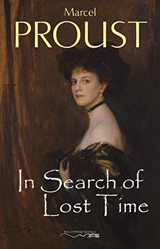
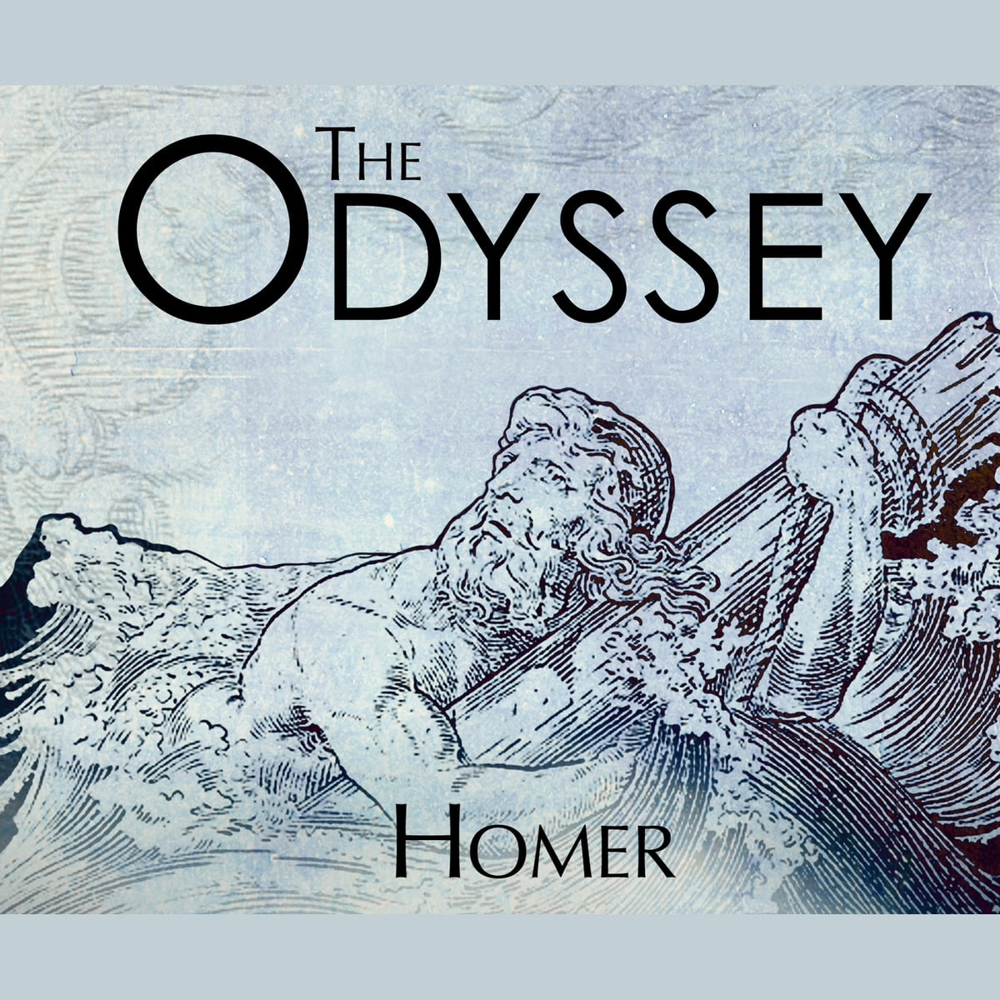

Ulysses chronicles the appointments and encounters of the itinerant Leopold Bloom in Dublin in the course of an ordinary day, 16 June 1904
In Search of Lost Time follows the narrator's recollections of childhood and experiences into adulthood in the late 19th-century and early 20th-century high-society France, while reflecting on the loss of time and lack of meaning in the world.
The Odyssey is one of two major ancient Greek epic poems attributed to Homer. It is one of the oldest extant works of literature still widely read by modern audiences. As with the Iliad, the poem is divided into 24 books. It follows the Greek hero Odysseus, king of Ithaca, and his journey home after the Trojan War